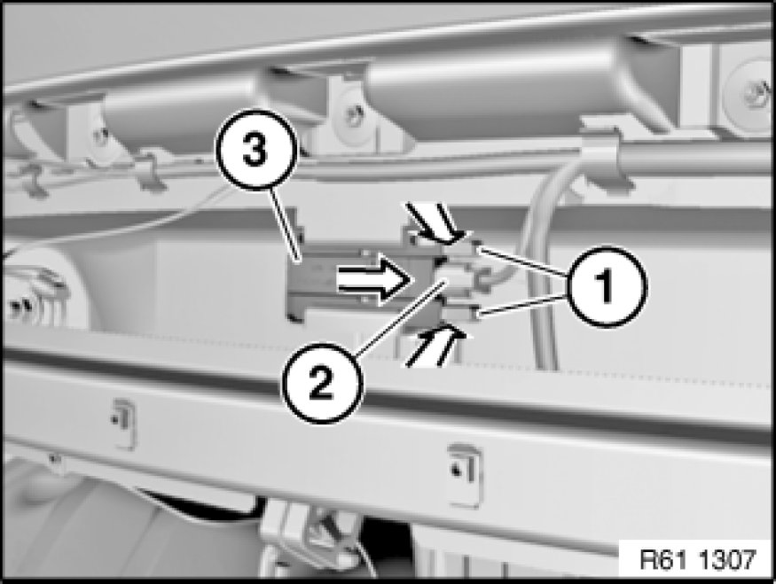

Removing and Installing/Replacing Bumper Antenna for Comfort Access System
61 35 975 - Removing and installing/replacing bumper antenna for Comfort Access System

Necessary preliminary tasks:
- Remove rear bumper trim

Disconnect plug connection (2).
Unlock catches (1) and remove bumper antenna for comfort access system (3) in direction of arrow from holder.
Installation:
Make sure bumper aerial/antenna for comfort access system (3) is correctly seated in holder.